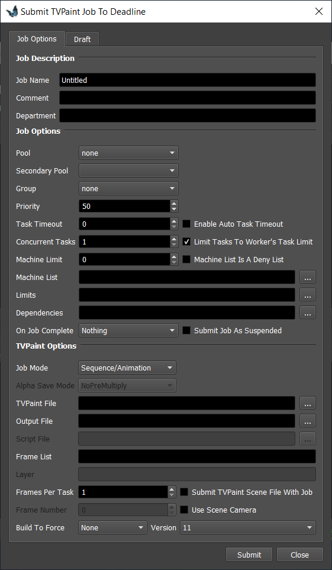
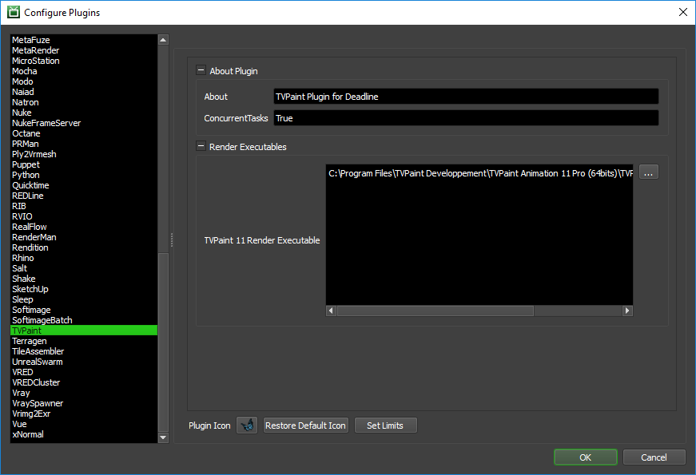

TVPaint¶
Job Submission¶
You can submit TVPaint Standalone jobs from the Monitor.
Submission Options¶
The general Deadline options are explained in the Job Submission documentation, and the Draft/Integration options are explained in the Draft and Integration documentation. The TVPaint specific options are:
Job Mode: The different TVPaint job modes supported by Deadline, which are “Sequence/Animation”, “Single Image”, “Script Job”, “Export Layers”. These various job modes determine how a scene file is rendered.
Alpha Save Mode: The different Alpha Save Mode’s supported by TVPaint, which are “NoPreMultiply”, “PreMultiply”, “NoAlpha”, “AlphaOnly”.
TVPaint File: The scene file (*.tvpp) to be rendered.
Output File: The path to where the rendered images will be saved.
Script File: The path to where Deadline can find the custom script file for rendering the scene, if “Script Job” is selected as the job mode.
Layer: The layer to export when exporting a single layer.
Use Scene Camera: If this box is checked, TVPaint only renders what is in the camera’s frame.
Version: The version of TVPaint to render with.
Build To Force: You can force 32 bit or 64 bit rendering.
Custom Script Job¶
There are five different Job Modes that Deadline supports which are “Sequence/Animation”, “Single Image”, “Script Job”, “Export Layers” and “Single Layers”. If you choose the “Script Job” mode, you can access the following values from your custom script:
JobMode: The job mode selected by the Deadline user.
AlphaSaveMode: The selected Alpha Save Mode.
ScenePath: The path to where Deadline can find the scene file.
UseCamera: The boolean value that determines whether or not to use the scene camera while rendering.
StartFrame: The start frame for the render task.
EndFrame: The end frame for the render task.
ExportFormat : The format of the images to be exported.
ExportPath: The path to where the rendered images will be saved.
For example:
tv_ReadUserString "DeadlineConfig" "ExportFormat" "JPEG"
format = result
tv_ReadUserString "DeadlineConfig" "JobMode" "Sequence/Animation"
mode = result
The ‘tv_ReadUserString’ is a TVPaint function used to get the render values submitted. The first parameter is Deadline’s TVPaint name space, the second parameter ‘ExportFormat’ is the name of the value to retrieve. And the third parameter ‘JPEG’ is a default value, for if it doesn’t get a result for the “DeadlineConfig” and “ExportFormat” parameters supplied. Finally ‘format’ and ‘mode’ are variables that get the result of the function calls.
Plugin Configuration¶
You can configure the TVPaint plugin settings from the Monitor. While in power user mode, select Tools -> Configure Plugins and select the TVPaint plugin from the list on the left.
Render Executables
TVPaint 11 Render Executable: The path to the TVPaint executable used for rendering. Enter alternative paths on separate lines.
FAQ¶
Which versions of TVPaint are supported?
TVPaint 11 is currently supported.
Rendering on macOS.
Due to a known issue in TVPaint, network rendering is currently not supported on macOS. However, jobs can be submitted from macOS to be rendered on a different operating system (Windows/Linux). This issue should be fixed in a future version of TVPaint.
Exporting Quicktime files.
Currently, Quicktime export is not possible in the 64 bits version of TVPaint Animation. If you try to do so through Deadline, TVPaint generates an output file with the last format used. For now, the only way to export Quicktime is to use the 32 bits version of TVPaint Animation.
Error Messages And Meanings¶
This is a collection of known TVPaint error messages and their meanings, as well as possible solutions. We want to keep this list as up to date as possible, so if you run into an error message that isn’t listed here, please contact Deadline Support and let us know.
Currently, no error messages have been reported for this plugin.

{kind=link}
{kind=link}